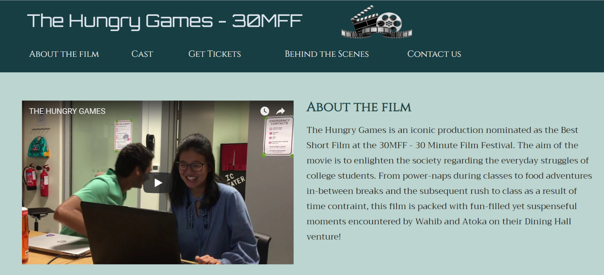
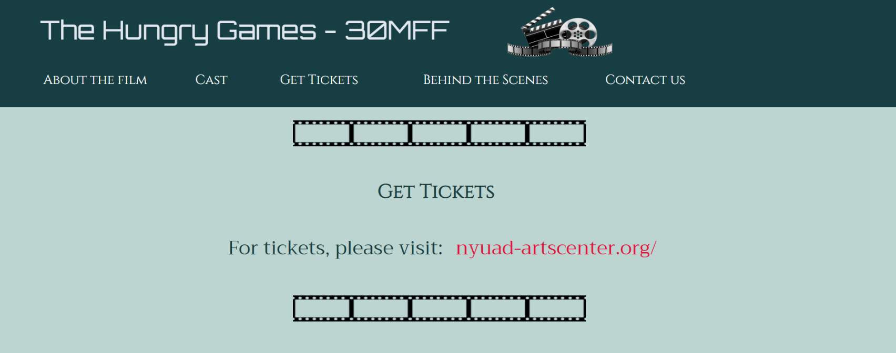
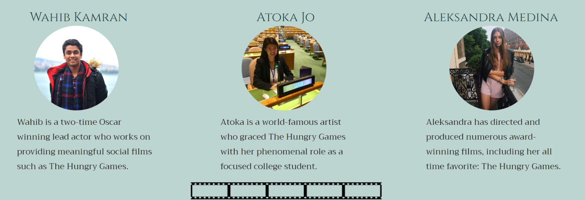

The idea behind the short film 'The Hungry Games' and the 30MFF is to promote short films in general by organizing a web page with a user interface aimed at providing the outlook of a film website. It basically advertises a short film called 'The Hungry Games' which showcases the struggle of two college students as they rush to get food during their 10-minute class break. By using 2D cinematic images such as that of a movie clapper, film rolls etc., the web-page is designed in such a manner which enables the viewer to instantaneously figure out the theme of the page without necessarily having to read the content of it.
One of the many aspects of the web page include the 'Get Tickets' section, which basically makes the website, the video, and the 30MFF somewhat 'official' as if it's a real film to be screened. The link redirects you to the famous NYUAD Arts Center Website, so that the viewers can get a sense of their upcoming events as well as they explore the website.
A basic wireframe was created at first on a sheet of paper to get a sense of what the website should look like before implementing it. The overall theme of the website (i.e. promoting short films, such as 'The Hungry Games') was decided. Keeping the wireframe of the website in mind, all the content was positioned accordingly in the website by using basic CSS comands on HTML class tags (these included the positioning of the embedded video, the cast photos, navigation bar, etc.). Once everything was put into the desired place, better fonts (using Google Fonts), background colors and cinematic tool images were integrated and positioned accordingly to make the website aesthetically more pleasing. At this point, my basic wireframe had been successfully implemented. Amidst all of this, I got exposed to a variety of other CSS features that I used to make the website interactive. Some of which include: section bookmarks (adding links to the elements of the navigation bar using tags), smooth scroll, and adjusting the border radius of the cast images. The cast descriptions were also aimed to promote various roles in film making. The cast section is shown below:
'The Hungry Games' is my first ever self-designed webpage. The fact that I was able to execute my wireframe (which was made at a point when I had no knowledge of web development whatsoever) makes me extremely proud of the webpage. Personally, my goals for the website were to get acquainted primarily with HTML and CSS languages. Although my code was longer than usual, I intentionally created a class for every element so that I can fully grasp the functionalities of the CSS attributes taught to us in class. All the elements of the website were the result of a step-by-step build up of code. Although the CSS code was repetitive throughout, it gave me a clear sense of direction and helped me understand the implications of CSS attributes. All in all, despite the fact that there is room for improvement in terms of overall design, positioning, and interactivity (maybe a bit more JavaScript next time?) the expectations and goals I had in mind before starting the website were not only met, but the final working version of my webpage surpassed my expectations.